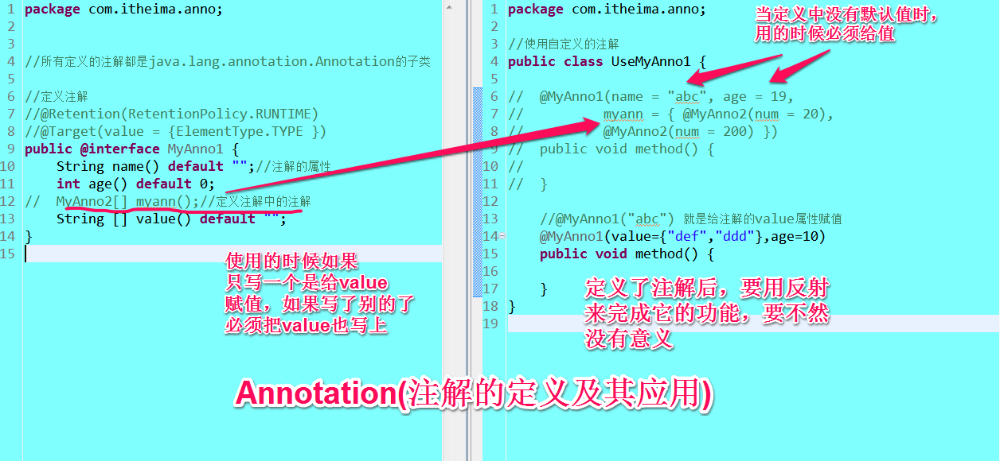
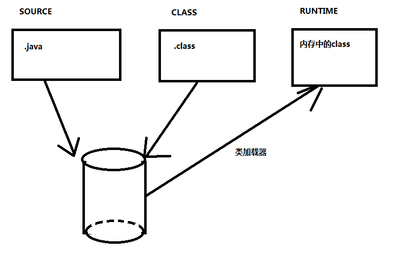
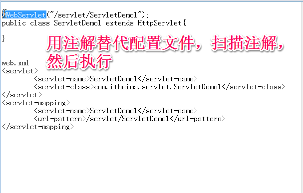

一、注解的定义
2、元注解：
public enum ElementType {
3.3 @Documented：注解是否出现在JavaDoc文档中
1、从 JDK 5.0 开始, Java 增加了对元数据(MetaData) 的支持, 也就是 Annotation(注解)。
什么是Annotation，以及注解的作用?三个基本的 Annotation:
@Override: 限定重写父类方法, 该注解只能用于方法@Deprecated: 用于表示某个程序元素(类, 方法等)已过时@SuppressWarnings: 抑制编译器警告.
Annotation 其实就是代码里的特殊标记, 它用于替代配置文件；传统方式通过配置文件告诉类如何运行，有了注解技术后，开发人员可以通过注解告诉类如何运行。在Java技术里注解的典型应用是：可以通过反射技术去得到类里面的注解，以决定怎么去运行类。
2、定义注解(注解本身不可以继承)
如何定义注解
public @interface 注解的名称{}
声明注解的属性:
注解属性的作用：原来写在配置文件中的信息，可以通过注解的属性进行描述。Annotation 的属性声明方式：类型 属性名称() [default 默认值];String name();属性默认值声明方式：String name() default “xxx”;特殊属性value：如果注解中有一个名称value的属性，那么使用注解时可以省略value=部分，如@MyAnnotation(“xxx")特别注意：类型必须是基本类型、String、Class、注解类型、枚举及以上类型的一维数组。
二、注解的反射
1、java.lang.reflect Interface AnnotatedElement
所有定义的注解都是java.lang.annotation.Annotation的子类
- All Known Implementing Classes:
- AccessibleObject, Class, Constructor, Executable, Field, Method, Package, Parameter
Modifier and Type Method and Description <T extends Annotation>
TgetAnnotation(Class<T> annotationClass)Returns this element's annotation for the specified type if such an annotation is present, else null.Annotation[]getAnnotations()Returns annotations that are present on this element.default <T extends Annotation>
T[]getAnnotationsByType(Class<T> annotationClass)Returns annotations that are associated with this element.default <T extends Annotation>
TgetDeclaredAnnotation(Class<T> annotationClass)Returns this element's annotation for the specified type if such an annotation is directly present, else null.Annotation[]getDeclaredAnnotations()Returns annotations that are directly present on this element.default <T extends Annotation>
T[]getDeclaredAnnotationsByType(Class<T> annotationClass)Returns this element's annotation(s) for the specified type if such annotations are either directly present or indirectly present.default booleanisAnnotationPresent(Class<? extends Annotation> annotationClass)Returns true if an annotation for the specified type is present on this element, else false.
2、元注解：
只能用在注解上的注解，就是元注解。
3、注解的生命周期：
3.1 @Retention: 改变注解的生命周期.只能用于修饰一个 Annotation 定义，改变注解的生命周期。@Rentention 包含一个 RetentionPolicy 类型的成员变量, 通过这个变量指定域。
RetentionPolicy.CLASS: 编译器将把注解记录在 class 文件中. 当运行 Java 程序时, JVM 不会保留注解. 这是默认值
RetentionPolicy.RUNTIME:编译器将把注释记录在 class 文件中. 当运行 Java 程序时, JVM 会保留注解. 程序可以通过反射获取该注释RetentionPolicy.SOURCE: 编译器直接丢弃这种策略的注释
3.2 @Target：指示注解能用在何处. @Target 包含了一个名为 value，类型为ElementType的成员变量。
public enum ElementType {
/** Class, interface (including annotation type), or enum declaration */TYPE,/** Field declaration (includes enum constants) */FIELD,/** Method declaration */METHOD,/** Parameter declaration */PARAMETER,/** Constructor declaration */CONSTRUCTOR,/** Local variable declaration */LOCAL_VARIABLE,/** Annotation type declaration */ANNOTATION_TYPE,/** Package declaration */PACKAGE}
3.4 @Inherited：使用了注解的类的子类是否自动拥有注解。
三、注解的一个应用，模拟@Test
import java.lang.reflect.Method;

三、注解的一个应用，模拟@Test
1、定义注解
import java.lang.annotation.ElementType;
import java.lang.annotation.Retention;
import java.lang.annotation.RetentionPolicy;
import java.lang.annotation.Target;
//要用反射，得加上@Retention(RetentionPolicy.RUNTIME)
@Retention(RetentionPolicy.RUNTIME)
//定义此注解只能在方法上用
@Target(ElementType.METHOD)
public @interface MyTest {
double timeOut() default -1;}
2、用反射来完成MyTest的功能
import java.lang.reflect.Method;
public class MyTestRunner {public static void main(String[] args) throws Exception{//反射得到要测试类的所有方法Method[] methods = TestMyTestAnno.class .getMethods();for (Method method : methods) {//Method ms [] = clazz.getMethods();//判断方法上面有没有叫做@MyTest的注解//如果当前方法上面没有@MyTest注解，返回的是nullMyTest myTest = method.getAnnotation(MyTest .class);if(myTest != null){//执行该方法，判断是否超时long beganTime = System.currentTimeMillis();method.invoke(TestMyTestAnno.class.newInstance(), null);long useTime = System.currentTimeMillis() - beganTime;//获取注解上配置的timeout属性的值long planUserTime = (long) myTest.timeOut();if(planUserTime>=0){//说明用户指定了时间if(useTime>planUserTime)throw new RuntimeException("超时" );}}}}}
3、写一个测试注解的类
public class TestMyTestAnno {
@MyTest(timeOut=1)
public void say() throws InterruptedException{
Thread. sleep(2);
System. out.println("你好！" );
}
}
四、
